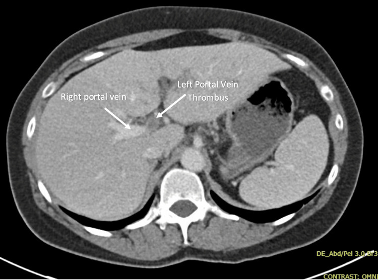

Ficha del catálogo
Trombosis de la vena porta
- Sistema
- Digestivo
- Modalidad
- TC
- Región
- Eje esplenoportal
- Dificultad
- Intermedio
Es la oclusión parcial o completa de la vena porta o de sus ramas por material trombótico. Se asocia a cirrosis, a estados protrombóticos, a infecciones abdominales y a neoplasias, en especial el hepatocarcinoma. Puede ser asintomática o manifestarse con dolor, hipertensión portal aguda o isquemia intestinal cuando se extiende al territorio mesentérico.
Técnica
La tomografía con medio de contraste intravenoso en fase portal es el estudio más empleado. Conviene añadir una fase arterial cuando se sospecha origen tumoral y una adquisición sin contraste para no confundir material hiperdenso con realce. Las reconstrucciones coronales facilitan seguir todo el eje desde la vena esplénica y la mesentérica superior hasta las ramas intrahepáticas.
Qué observar
- Defecto de repleción endoluminal hipodenso rodeado por contraste en la fase portal
- Calibre del vaso, expandido en la trombosis aguda y de calibre normal o reducido en la crónica
- Realce arterial transitorio y heterogéneo del parénquima hepático adyacente por redistribución de flujo
- Presencia de cavernomatosis, con múltiples vasos serpiginosos que sustituyen al vaso ocluido
- Extensión al territorio mesentérico superior y signos de sufrimiento de la pared intestinal
- Datos que sugieran trombo tumoral, como expansión marcada del vaso y realce del propio trombo
Hallazgos
La trombosis aguda muestra un vaso expandido con contenido hipodenso y en ocasiones hiperdenso en la adquisición sin contraste, con edema periportal y ausencia de flujo en el Doppler. La forma crónica se reconoce por la ausencia del vaso normal y la aparición de una maraña de colaterales periportales, la llamada cavernomatosis, junto con signos de hipertensión portal. La diferenciación entre trombo blando y trombo tumoral es clave, ya que este último expande el vaso, realza en fase arterial, restringe en difusión y suele ser contiguo a una masa hepática.
Perlas
El realce arterial transitorio de un segmento hepático puede ser el primer indicio de una rama portal ocluida, por lo que ante un área que solo llama la atención en fase arterial conviene rastrear la rama portal correspondiente. La extensión del trombo hacia la vena mesentérica superior es el dato que anticipa isquemia intestinal y cambia por completo la urgencia del manejo.
Diagnóstico diferencial
- Trombo tumoral por hepatocarcinoma
- Expande el vaso, realza en fase arterial, restringe en difusión y se continúa con una masa hepática.
- Artefacto de mezcla de contraste
- Aspecto heterogéneo que desaparece en fases posteriores y no tiene traducción en el Doppler.
- Compresión extrínseca del eje portal
- Estrechamiento del vaso por masa adyacente sin material endoluminal.
- Cavernomatosis crónica sin evento agudo
- Colaterales bien establecidas sin expansión venosa ni edema periportal.
- Pileflebitis séptica
- Trombosis con gas o con realce parietal marcado y foco infeccioso abdominal, como apendicitis o diverticulitis.
Simuladores
- Flujo lento en el eje portal que produce zonas de menor densidad en fase precoz
- Artefacto de movimiento respiratorio que fragmenta la imagen del vaso
- Refuerzo por ganglio o por tejido periportal que aparenta un defecto endoluminal
Por modalidad
- TC
- Es el método más usado por su cobertura completa del eje y por su capacidad de valorar el intestino en el mismo estudio
- US
- El Doppler detecta la ausencia de flujo y la cavernomatosis, es accesible y sirve para el seguimiento
- RM
- Distingue mejor el trombo tumoral del trombo blando gracias a la difusión y al estudio dinámico
Protocolo
Tomografía con adquisición sin contraste, fase arterial a los 30 a 35 segundos cuando se sospecha origen tumoral y fase portal a los 60 a 70 segundos, con cortes finos y reconstrucciones coronales y sagitales del eje esplenoportal. En resonancia se usan secuencias T2, difusión y estudio dinámico tras gadolinio. El Doppler se ajusta con escala de velocidad baja para no perder flujos lentos.
Clasificación
Errores frecuentes
- Confundir un artefacto de mezcla de contraste con un trombo verdadero
- No buscar la extensión mesentérica y pasar por alto el riesgo de isquemia intestinal
- Etiquetar como trombo blando un trombo tumoral sin valorar el realce arterial ni la difusión

trombosis portal cavernomatosis trombo tumoral hipertension portal isquemia mesenterica tomografia Doppler